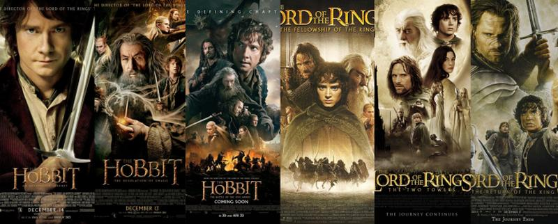

Middle Earth

Creator: J.R.R. Tolkien
Publisher: Tolkien Estate, Warner Bros,
Middle-earth is the fictional setting of much of British writer J. R. R. Tolkien's legendarium. The term is equivalent to the term Midgard of Norse mythology, describing the human-inhabited world, that is, the central continent of the Earth in Tolkien's imagined mythological past. Tolkien's most widely read works, The Hobbit and The Lord of the Rings, take place entirely in Middle-earth, and Middle-earth has also become a short-hand to refer to the legandarium and Tolkien's fictional take on the world.
J. R. R. Tolkien's novels The Hobbit and The Lord of the Rings, set in Middle-earth, have been the subject of various film adaptations. There were many early failed attempts to bring the fictional universe to life in screen, some even rejected by the author himself. The first depictions of Middle-earth on film were realized in 1966 as a short cartoon film. In 1978 the first big screen adaptation of the fictional setting was introduced in The Lord of the Rings. The story was more or less completed with the animated television special The Return of the King. In 1985, Middle-earth was depicted in a live-action film for the first time by an adaptation produced in the Soviet Union. In 1993, a live-action television miniseries titled Hobitit was aired by the Finnish broadcaster Yle.
New Line Cinema released the first part of director Peter Jackson's The Lord of the Rings film series in 2001 as part of a trilogy and several actors and roles were introduced once again in a trilogy in The Hobbit film series. There have also been fan films of Middle-earth such as The Hunt for Gollum and Born of Hope, which were uploaded to YouTube on May 8, 2009 and December 11, 2009 respectively.
Miramax Films developed a full-fledged live action adaptation of The Lord of the Rings, with Peter Jackson as director. Eventually, with Miramax owner Disney becoming increasingly uneasy with the sheer scope of the proposed project, Jackson was given the opportunity to find another studio to take over. In 1999, New Line Cinema assumed production responsibility (while Miramax executives Bob Weinstein and Harvey Weinstein retained on-screen credits as executive producers). The three films were shot simultaneously. They featured extensive computer-generated imagery, including major battle scenes utilizing the "Massive" software program. The first film subtitled, The Fellowship of the Ring was released on December 19, 2001, the second film subtitled, The Two Towers on December 18, 2002 and the third film subtitled, The Return of the King worldwide on December 17, 2003. All three won the Hugo Award for Best (Long-form) Dramatic Presentation in their respective years.
The films were met with both critical and commercial success. Jackson's adaptations garnered seventeen Oscars, four for The Fellowship of the Ring, two for The Two Towers, and eleven for The Return of the King; these covered many of the award categories. The Return of the King in fact won all of the eleven awards for which it was nominated, including Best Picture. With a total of 30 nominations, the trilogy also became the most-nominated in the Academy's history, surpassing the Godfather series' 28 (with the release of The Hobbit, the series currently has 36 nominations total). Its 11 Oscars at the 2004 Academy Awards tied it for most awards won for one film with Titanic six years earlier and the 1959 version of Ben-Hur. It also broke the previous "sweep" record, beating Gigi and The Last Emperor (which each took 9 out of 9). The Return of the King also made movie history as the highest-grossing film opening on a Wednesday and was the second film after Titanic to earn over US$1 billion worldwide.
The Lord of the Rings film trilogy is verified to be the currently highest grossing motion picture trilogy worldwide of all time, evidenced by its earning close to $3-billion (US). The film trilogy also set a record for the total number of Academy Awards won, tallying a total of seventeen Oscars. Critical acclaim has commonly hailed the trilogy as "the greatest films of our era," and "the trilogy will not soon, if ever, find its equal."
Films:
- The Hobbit, Rankin-Bass studios (1977)
- The Lord of the Rings, Ralph Bakshi (1978)
- The Return of the King, Rankin-Bass (1980)
- The Lord of the Rings: The Fellowship of the Ring, New Line Cinema (2001)
- The Lord of the Rings: The Two Towers, New Line Cinema (2002)
- The Lord of the Rings: The Return of the King, New Line Cinema (2003)
- The Hobbit: An Unexpected Journey, Warner Bros. (2012)
- The Hobbit: The Desolation of Smaug, Warner Bros. (2013)
- The Hobbit: The Battle of the Five Armies, Warner Bros. (2014)
Books:
- 1937 The Hobbit
The Hobbit Bilbo Baggins joins a company of dwarves and the wizard Gandalf in a quest to reclaim an old Dwarvish kingdom from the dragon Smaug.
- 1954 The Fellowship of the Ring, part 1 of The Lord of the Rings
Bilbo's cousin and heir Frodo Baggins sets out on a quest to rid Middle-earth of the One Ring, joined by the Fellowship of the Ring.
- 1954 The Two Towers, part 2 of The Lord of the Rings
The Fellowship is split apart: while Frodo and his friend Sam continue their quest, Aragorn, Gimli and Legolas fight to rescue the hobbits Peregrin Took (Pippin) and Meriadoc Brandybuck (Merry) from Orcs and to save the Kingdom of Rohan.
- 1955 The Return of the King, part 3 of The Lord of the Rings
Frodo and Sam reach Mordor, while Aragorn arrives in Gondor and reclaims his heritage.
- 1962 The Adventures of Tom Bombadil and Other Verses from the Red Book
An assortment of poems, only loosely related to The Lord of the Rings.
- 1967 The Road Goes Ever On
A song cycle with the composer Donald Swann (long out of print but reprinted in 2002)
Tolkien died in 1973. All further works were edited by Christopher Tolkien and published posthumously. Only The Silmarillion, Bilbo's Last Song and The Children of Hurin are presented as finished work — the others are collections of notes and draft versions.
- 1977 The Silmarillion
- 1980 Unfinished Tales of Numenor and Middle-earth
- 1981 The Letters of J. R. R. Tolkien
- 1990 Bilbo's Last Song
- The History of Middle-earth series:
- 1983 The Book of Lost Tales 1
- 1984 The Book of Lost Tales 2
- 1985 The Lays of Beleriand
- 1986 The Shaping of Middle-earth
- 1987 The Lost Road and Other Writings
- 1988 The Return of the Shadow (The History of The Lord of the Rings v.1)
- 1989 The Treason of Isengard (The History of The Lord of the Rings v.2)
- 1990 The War of the Ring (The History of The Lord of the Rings v.3)
- 1992 Sauron Defeated (The History of The Lord of the Rings v.4)
- 1993 Morgoth's Ring (The Later Silmarillion, part one)
- 1994 The War of the Jewels (The Later Silmarillion, part two)
- 1996 The Peoples of Middle-earth
- 2007 The Children of Hurin
- 2007 Mr. Baggins
- 2007 Return to Bag-End
- 2017 The Tale of Beren and Lúthien
Video Games:
- The Hobbit (1982)
- Lord of the Rings: Journey to Rivendell (1983)
- Lord of the Rings: Game One (AKA The Fellowship of The Ring) (1985)
- The Shadows of Mordor: Game Two of Lord of the Rings (1987)
- War in Middle-earth (1988)
- The Crack of Doom (1989)
- The Lord of the Rings Volume 1 (1990)
- The Lord of the Rings Volume 2 (1992)
- Riders of Rohan (1991)
- The Lord of the Rings Volume 1 (1994)
- The Lord of the Rings: The Fellowship of the Ring (2002)
- The Lord of the Rings: The Two Towers (2002)
- The Lord of the Rings: The Return of the King (2003)
- The Lord of the Rings: War of the Ring (2003)
- The Hobbit (2003)
- The Lord of the Rings: The Third Age (2004)
- The Lord of the Rings: The Battle for Middle-earth (2004)
- The Lord of the Rings: Tactics (2005)
- The Lord of the Rings: The Battle for Middle-earth II (2006)
- The Lord of the Rings: The Battle for Middle-earth II: The Rise of the Witch-king (2006)
- The Lord of the Rings Online: Shadows of Angmar
- The Lord of the Rings: Conquest (2009)
- The Lord of the Rings: Aragorn's Quest (2010)
- The Lord of the Rings: Middle-earth Defense (2010)
- The Lord of the Rings: War in the North 2011
- Lego The Lord of the Rings (2012)
- The Hobbit: Kingdoms of Middle-earth (2012)
- The Hobbit: An Unexpected Journey - A Journey through Middle-earth (2013)
- The Hobbit: Armies of The Third Age (2013)
- The Hobbit: The Desolation of Smaug - Orc Attack (2013)
- Lego The Hobbit (2014)
- Middle-earth: Shadow of Mordor (2014)
- The Lord of the Rings: Legends of Middle-earth (2014)
- The Hobbit: Battle of the Five Armies - Fight for Middle-earth (2014)
- Middle-earth: Shadow of War (2017)